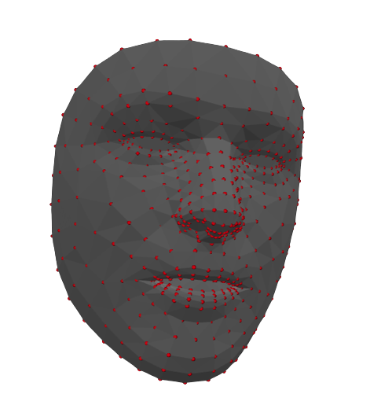
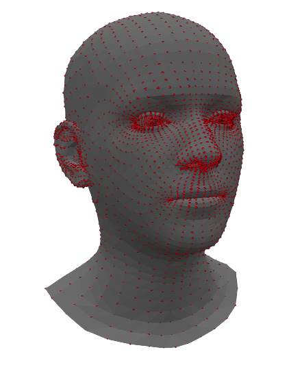

4D reconstruction#
In this short tutorial, we’ll focus on how to use Medusa to reconstruct 4D faces from (video) data.
The easy way#
The easiest way, as shown in the quickstart, is using the high-level function videorecon:
from medusa.recon import videorecon
As can be seen in the package’s API docs, this function takes multiple arguments, the most important being:
video_path: path to the video that you want to process, andrecon_model: the name of the reconstruction model you want to use
Medusa loads in the video data using the PyAV package (which itself is a wrapper around ffmpeg), so any video format supported by PyAV can be used; later in this tutorial, we’ll address data loading in more detail!
At the moment, Medusa supports the following reconstruction models:
from medusa.defaults import RECON_MODELS
print(RECON_MODELS)
['emoca-dense', 'emoca-coarse', 'deca-dense', 'deca-coarse', 'mediapipe']
Mediapipe#
The ‘mediapipe’ model is a wrapper around the Mediapipe Face Mesh model with added functionality that estimates the pose of the face. The 3D topology that Mediapipe reconstructs has 468 vertices (or “landmarks”) that describe the shape of the face surface. We’ll discuss how the reconstructed data is represented in more detail in the data representation data!

Example of mesh reconstructed by the Mediapipe model, containing 468 vertices (red points).
FLAME-based models#
The ‘*-coarse’ and *-dense’ models are different reconstruction models based on the FLAME topology. The different types of models (emoca, and deca) differ in how they reconstruct the face, but they all return a 3D mesh in the FLAME topology.
The suffixes “coarse” and “dense” refer to the density of the returned topology; its “spatial resolution” if you will. The “coarse” models return a mesh with 5023 vertices while the “dense” models return a mesh with 59,315 vertices. Both the coarse and dense FLAME-based models return a reconstruction of the entire head (as shown in the figure below), in contrast to the Mediapipe model which only reconstucts the face.

Example of mesh reconstructed by a coarse FLAME-based model, containing 5023 vertices (red points) that cover the entire head (including ears and eyes).
In our experience, the “emoca-coarse” model provides the most accurate reconstructions at an acceptable spatial resolution, so we’ll use that model throughout the tutorials. Note: you need to downloaded additional data to use the FLAME-based models; check the installation instructions for details.
Enough talking; let’s reconstruct a video! We’ll use a short example video clip contained in the package.
from medusa.data import get_example_video
vid_path = get_example_video()
# We'll also set the logging level to WARNING to avoid printing too much information
# Set this to 'INFO' (the default) to see more information
data_recon = videorecon(vid_path, recon_model='emoca-coarse', loglevel='WARNING')
The videorecon function returns the reconstruction data as an object from the custom Data4D class. In the data representation tutorial, we’ll explain the way Medusa represents reconstruction data at length!
The hard way#
The videorecon function provides an easy to use, high-level API to reconstuct faces from videos, but it hides much of the intermediate steps between data loading and reconstruction. In you want to know more about these steps or want more flexibility in your analyses, read on!
Data loading#
The first step in the pipeline is to read (part of) a video into memory. (Although Medusa’s reconstruction models work on both single images as well as videos, here we’ll assume you want to reconstruct face data from videos.) As mentioned before, Medusa provides a custom class, VideoLoader to perform easy and fast loading of video frames.
from medusa.io import VideoLoader
The VideoLoader class inherits from PyTorch’s DataLoader class, so it can be used in roughly the same way. The most important arguments when initializing a VideoLoader object are:
video_path: path to the video file, andbatch_size: number of frames to read in at once.
As the batch_size parameter suggests, the video is not loaded into memory at once, but in batches. This is to avoid out-of-memory errors, especially if you intend load data onto a GPU (which you can control using the device parameter in most classes/functions). Let’s initialize a VideoLoader with our example video file and a batch size of 32 (the default, in fact):
loader = VideoLoader(vid_path, batch_size=32)
The loader is, like PyTorch DataLoader objects, an iterable, which means that you can loop over it! In each iteration of the loop, it will yield a batch of data with batch_size number of frames:
for i, batch in enumerate(loader):
print(f"Loading in batch {i+1} with {batch.shape[0]} frames ...")
Loading in batch 1 with 32 frames ...
Loading in batch 2 with 32 frames ...
Loading in batch 3 with 32 frames ...
Loading in batch 4 with 32 frames ...
Loading in batch 5 with 32 frames ...
Loading in batch 6 with 32 frames ...
Loading in batch 7 with 32 frames ...
Loading in batch 8 with 8 frames ...
As you can see, each iteration returns a batch of 32 frames, except the last batch which only contains the last 8 frames, after which the loader stops automatically.
The batch variable returned each iteration contains video frame data as a torch.Tensor object with unsigned integers (with values ranging from 0-255):
print(type(batch), batch.dtype)
<class 'torch.Tensor'> torch.float32
The tensor is organized as a four dimensional array with dimensions \(N\) (number of frames) \(\times H\) (height) \(\times W\) (width) \(\times 3\) (RGB), which is the format in which the Medusa pipeline expects the loaded video data to be.
tuple(batch.shape)
(8, 3, 384, 480)
Cropping#
With the exception of the Mediapipe model, reconstruction models implemented in Medusa expect the data to be cropped in a particular way and resized to a specific height and width. For convenience, Medusa’s reconstruction models will in fact crop the data for you if you haven’t done so already. Here, however, we’ll show you how to crop the data yourself.
For all FLAME-based reconstruction models, you need to use Medusa’s BboxCropModel class, which is a reimplementation of the cropping procedure in the original DECA model. (Medusa’s other crop model, AlignCropModel, is only used for the image-based reconstruction model MICA.)
from medusa.crop import BboxCropModel
This particular crop model roughly does the following:
Runs a face detection model that returns, per detected face, a bounding box (and five landmarks);
Transforms the bounding box into a standard format and size;
Warps and resamples the original image to the cropped image space (using a similarity transform)
The face detection model used is the SCRFD model from Insightface, reimplemented to be completely in PyTorch (and thus a lot faster). We’ll skip over the details of the crop model for now (see this tutorial).
For most FLAME-based models, the default arguments for initialization of this crop model suffice:
crop_model = BboxCropModel()
Now, to run the crop model on the batch of video frames, you use the crop_model object as if it were a function (which runs the __call__ method, which is common for PyTorch models):
out_crop = crop_model(batch)
---------------------------------------------------------------------------
ValueError Traceback (most recent call last)
Cell In[11], line 1
----> 1 out_crop = crop_model(batch)
File /analyse/Project0257/lukas/code/miniconda3/envs/medusa/lib/python3.10/site-packages/torch/nn/modules/module.py:1501, in Module._call_impl(self, *args, **kwargs)
1496 # If we don't have any hooks, we want to skip the rest of the logic in
1497 # this function, and just call forward.
1498 if not (self._backward_hooks or self._backward_pre_hooks or self._forward_hooks or self._forward_pre_hooks
1499 or _global_backward_pre_hooks or _global_backward_hooks
1500 or _global_forward_hooks or _global_forward_pre_hooks):
-> 1501 return forward_call(*args, **kwargs)
1502 # Do not call functions when jit is used
1503 full_backward_hooks, non_full_backward_hooks = [], []
File /analyse/Project0257/lukas/projects/medusa/medusa/medusa/crop/bbox_crop.py:102, in BboxCropModel.forward(self, imgs)
87 def forward(self, imgs):
88 """Crops images to the desired size.
89
90 Parameters
(...)
100 images) and "crop_mat" (3x3 crop matrices)
101 """
--> 102 out_lms = self._lms_model(imgs)
103 lms = out_lms['lms']
105 if lms is None:
File /analyse/Project0257/lukas/code/miniconda3/envs/medusa/lib/python3.10/site-packages/torch/nn/modules/module.py:1501, in Module._call_impl(self, *args, **kwargs)
1496 # If we don't have any hooks, we want to skip the rest of the logic in
1497 # this function, and just call forward.
1498 if not (self._backward_hooks or self._backward_pre_hooks or self._forward_hooks or self._forward_pre_hooks
1499 or _global_backward_pre_hooks or _global_backward_hooks
1500 or _global_forward_hooks or _global_forward_pre_hooks):
-> 1501 return forward_call(*args, **kwargs)
1502 # Do not call functions when jit is used
1503 full_backward_hooks, non_full_backward_hooks = [], []
File /analyse/Project0257/lukas/projects/medusa/medusa/medusa/landmark/retinaface.py:65, in RetinafaceLandmarkModel.forward(self, imgs)
49 def forward(self, imgs):
50 """Runs the landmark model on a set of images.
51
52 Parameters
(...)
62 'img_idx' (image index), 'bbox' (bounding box)
63 """
---> 65 out_crop = self._crop_model(imgs)
66 if out_crop['imgs_crop'] is None:
67 return {**out_crop, 'lms': None}
File /analyse/Project0257/lukas/code/miniconda3/envs/medusa/lib/python3.10/site-packages/torch/nn/modules/module.py:1501, in Module._call_impl(self, *args, **kwargs)
1496 # If we don't have any hooks, we want to skip the rest of the logic in
1497 # this function, and just call forward.
1498 if not (self._backward_hooks or self._backward_pre_hooks or self._forward_hooks or self._forward_pre_hooks
1499 or _global_backward_pre_hooks or _global_backward_hooks
1500 or _global_forward_hooks or _global_forward_pre_hooks):
-> 1501 return forward_call(*args, **kwargs)
1502 # Do not call functions when jit is used
1503 full_backward_hooks, non_full_backward_hooks = [], []
File /analyse/Project0257/lukas/projects/medusa/medusa/medusa/crop/bbox_crop.py:172, in InsightfaceBboxCropModel.forward(self, imgs)
157 def forward(self, imgs):
158 """Runs the crop model on a set of images.
159
160 Parameters
(...)
169 images) and "crop_mat" (3x3 crop matrices)
170 """
--> 172 out_det = self._det_model(imgs)
174 if out_det.get("conf", None) is None:
175 return {**out_det, "imgs_crop": None, "crop_mat": None}
File /analyse/Project0257/lukas/code/miniconda3/envs/medusa/lib/python3.10/site-packages/torch/nn/modules/module.py:1501, in Module._call_impl(self, *args, **kwargs)
1496 # If we don't have any hooks, we want to skip the rest of the logic in
1497 # this function, and just call forward.
1498 if not (self._backward_hooks or self._backward_pre_hooks or self._forward_hooks or self._forward_pre_hooks
1499 or _global_backward_pre_hooks or _global_backward_hooks
1500 or _global_forward_hooks or _global_forward_pre_hooks):
-> 1501 return forward_call(*args, **kwargs)
1502 # Do not call functions when jit is used
1503 full_backward_hooks, non_full_backward_hooks = [], []
File /analyse/Project0257/lukas/projects/medusa/medusa/medusa/detect/scrfd.py:105, in SCRFDetector.forward(self, imgs)
102 for i in range(b):
103 # add batch dim
104 img = imgs[i, ...].unsqueeze(0)
--> 105 det_outputs = self._det_model.run(img, outputs_as_list=True)
106 postproc_outputs = self._postproc_model(det_outputs, det_scale)
108 if postproc_outputs is None:
109 # No detections (that survive nms)
File /analyse/Project0257/lukas/projects/medusa/medusa/medusa/onnx.py:89, in OnnxModel.run(self, inputs, outputs_as_list)
87 for inp in inputs:
88 if inp.device.type != self.device:
---> 89 raise ValueError(f"Input tensor is on {inp.device}, but model on {self.device}!")
91 to_iter = zip(inputs, self._params["in_names"], self._params["in_shapes"])
92 for inp, name, shape in to_iter:
ValueError: Input tensor is on cpu, but model on cuda!
The crop model in fact returns a dictionary with multiple outputs:
list(out_crop.keys())
For now, the most important key is 'imgs_crop', which contain the cropped images:
batch_cropped = out_crop['imgs_crop']
tuple(batch_cropped.shape)
As you can see, the crop models returns the data in the “channels first” format, i.e., \(N \times 3 \times H \times W\), as is expected by the reconstruction models.
Reconstruction#
With the data cropped and resampled to the correct dimensions, we can finally run the reconstruction model. The reconstruction model classes can be imported from medusa.recon and currently we provide three different classes:
Mediapipe;DecaReconModelMicaReconModel
Importantly, as the EMOCA model is a retrained versions of the original DECA models, they are all created by initializing a DecaReconModel object. The exact deep learning model used by DecaReconModel depends on the name parameter (which is one of ‘deca-coarse’, ‘deca-dense’, ‘emoca-coarse’, ‘emoca-dense’).
So if you’d want to create an EMOCA-based (coarse) reconstruction model, you’ll do:
from medusa.recon import DecaReconModel
recon_model = DecaReconModel(name='emoca-coarse')
Actually, when you’re manually cropping the image yourself, you also need to supply an additional argument upon initialization: orig_img_size (a tuple with two integers representing width and height of the original image). The reason is that this will include the information about the location of the face(s) in the original image space rather than the cropped image space.
orig_size = (batch.shape[2], batch.shape[1]) # W x H
recon_model = DecaReconModel(name='emoca-coarse', orig_img_size=orig_size)
To run the reconstruction model on the cropped images, you’ll call it as a function (triggering the __call__ method) with the cropped images as first input and, optionally, the crop matrices from the cropping outputs (for the same reason as we initialized the recon model with the orig_img_size parameter):
batch_crop_mat = out_crop['crop_mat']
out_recon = recon_model(batch_cropped, batch_crop_mat)
Like the crop model, the reconstruction model returns a dictionary with different outputs:
list(out_recon.keys())
The 'v' key represents the reconstructed vertices and are stored in a PyTorch tensor of shape \(N\) (cropped images) \(\times V\) (vertices) \(\times 3\) (XYZ):
tuple(out_recon['v'].shape)
The 'mat' key represents the estimated “pose” relative to a standard (forward facing, non-rotated) reference face. It does so using a \(4 \times 4\) affine matrix per cropped image:
tuple(out_recon['mat'].shape)
We’ll go into how to interpret these values in more detail in another tutorial.
Tracking#
Ideally, the face detector (used in the BboxCropModel class) only detects a single face in each frame of our video (which, in fact, only contains only face; see quickstart). However, sometimes a video frame might not contain a face (or might be missed by the detector) or might contain multiple faces.
Note: the rest of the section contains extra information that is relevant if you deal with video stimuli with more than one face in it. If you don’t, you can safely ignore this section.
In case of multiple faces per frame, at some point you might want to “assign” each detection (and subsequent cropped image and reconstruction) to a particular face index. This process is sometimes called (face) “tracking”. To perform tracking, you can use the function sort_faces:
from medusa.tracking import sort_faces
This function needs two arguments: lms and img_idx. The lms (short for “landmarks”) refers to a PyTorch tensor of shape \(N\) (frames) \(\times L\) (landmarks) \(\times C\) (coordinates, e.g., 2 for image-based landmarks). The img_idx represents a integer tensor which maps detections to the frame they were detected in. For example, an img_idx of [0, 0, 1, 1, 2, 3, 4] would mean that there were two detections in frame 0, two in frame 1, and just one in frame 2, 3, and 4.
Such an img_idx tensor is in fact returned by Medusa’s crop models (as part of the output dictionary):
out_crop['img_idx']
For this video, the detector actually detected one face for each frame (as expected).
For the lms parameter, you can use the five landmarks returned by the crop model or the full set of reconstructed vertices (here: 5023 landmarks); the sort_faces function does not care whether the landmarks are 2D (such as the lms from the crop model) or 3D (such as the reconstructed vertices).
The sort_faces function will basically just try to assign each set of vertices to the “closest” (in terms of Euclidean distance) set of vertices in its current set. It then returns a face index for each detection (as an integer tensor):
face_idx = sort_faces(out_crop['lms'], out_crop['img_idx'])
face_idx
As expected, the function assigned the same face index (0) to each detection across the eight frames. However, the function has been tested and validated with much more difficult stimuli with frames without faces and multiple (up to four) moving faces.
Storing the data#
At this point, we have a bunch of different data sources, like reconstruction data, video metadata, tracking data, that we might like to store. As we’ve seen before, Medusa uses the custom class Data4D to store all features relevant to analyze and render the 4D reconstruction data.
from medusa.containers import Data4D
It takes quite a few arguments upon initialization. The most important ones are v and mat, representing the reconstructed vertices and pose (as affine matrices) — both as PyTorch tensors. Additionally, if you want to render the reconstructed data, you also need to pass the constructor the triangles associated with the vertices (the tri argument), the camera matrix to use (the cam_mat argument), and some video metadata (the video_metadata argument, a dictionary), as well as some tracking information (the aforementioned img_idx and face_idx features).
The default triangles and camera matrix can be extracted from the reconstruction model and the video metadata from the VideoLoader object:
tris = recon_model.get_tris()
cam_mat = recon_model.get_cam_mat()
video_metadata = loader.get_metadata()
Finally, initialization would look something like this:
data_recon = Data4D(
# recon data
v=out_recon['v'],
mat=out_recon['mat'],
# data for rendering
tris=tris,
cam_mat=cam_mat,
img_idx=out_crop['img_idx'],
face_idx=face_idx,
video_metadata=video_metadata
)
That’s it for this tutorial! If you want to know more about the Data4D class and how data is represented in Medusa, check out the data representation tutorial (up next).